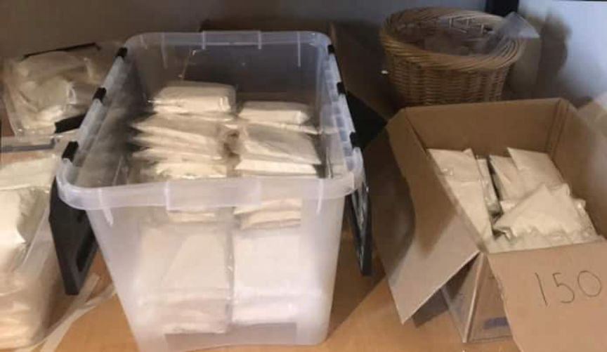
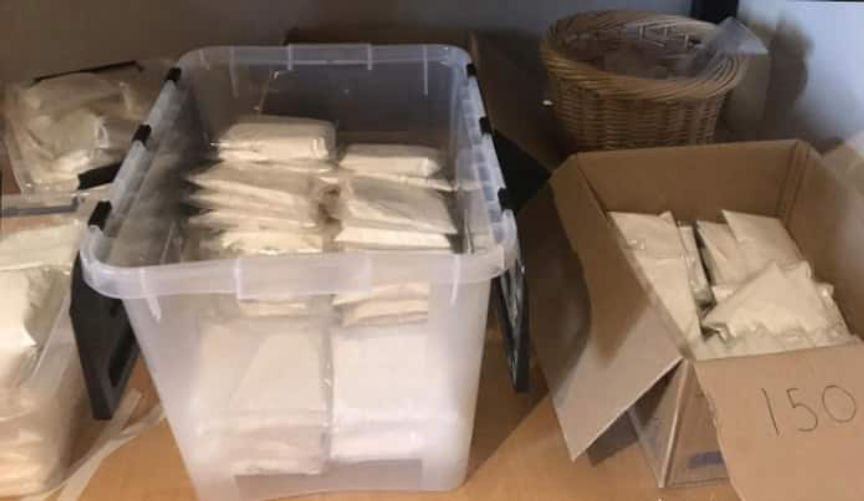

Nine Imprisoned for Darkweb Drug Trafficking Conspiracy
~2 min read | Published on 2019-12-05, tagged DarkWeb, Darkweb-Vendor, Drug-Bust, Drugs, Sentenced using 499 words.
Nine members of a 13-member darkweb drug trafficking ring were imprisoned for their roles in the operation. The ring sold a variety of drugs through the darkweb where they accepted orders and received payment in bitcoin. They used German post offices and mailboxes located in the German-Dutch border region to deliver drugs to their customers worldwide.
The ring had reportedly rented apartments in Germany and the Netherlands. The apartments in the Netherlands were used as packaging and labeling centers. Some of the ring members then moved the drug packages to Germany across the border daily. The ring members in Germany would then mail the drug packages through German post offices and mailboxes located near the Netherlands border.
In September 2018 the Public Prosecutor in Munster launched an investigation against the ring’s drug trafficking operation. The nature of the ring’s operation and interest from Dutch authorities led to the formation of a joint investigation team in November 2018. The joint investigation team was made up of agents from the Dutch Specialized Prosecution Office for Fraud and Environmental Crime, the Dutch Fiscal Intelligence and Investigation Service (FIOD), the German Public Prosecutor’s Office, Munster, and the German Customs Office. The team received support from Europol and Eurojust.
In the course of the joint investigation, customs authorities seized drugs worth over 400,000 Euros. The drugs included 25 kilograms of amphetamine, 145 grams of Heroin, 170 grams of cocaine, 1.6 grams of MDMA and 1.1 kilograms of ecstasy pills.
On February 1, 2019, the joint investigation team brought the ring’s operation to an end by raiding 10 properties in the German-Dutch border region, two in Germany and eight in the Netherlands. The raids led to the seizure of 40 kilograms of amphetamine, 1 kilogram of ecstasy pills, an undisclosed number of electronic devices and sales records. The investigators also seized 10,000 Euros in cash and arrested 12 members of the ring.
On December 5 nine members of the ring appeared before the District Court of Münster for sentencing. During the hearing, it was revealed that the ring made more than 1 million Euros in the course of its operation. Six of the men were found guilty of gang-based drug trafficking. The other three, a Dutchman and two Afghanistan brothers who lived in Enschede, Netherlands were found guilty of aiding and abetting drug trafficking. Their roles included packaging and moving the drug packages from Enschede to Germany.
One of the defendants was in charge of operations carried out in one of the apartments in Germany and was sentenced to 8 years in prison. He was also ordered to pay a fine of 600,000 Euros.
The second defendant was in charge of running the drug trafficking operation from an apartment in Losser, Netherlands and received the longest sentence. He was sentenced to 10 years in prison. He will also pay a fine of 720,000 Euros.
The other defendants received sentences between seven years in prison and three years and three months on probation depending on their roles.
The ring had reportedly rented apartments in Germany and the Netherlands. The apartments in the Netherlands were used as packaging and labeling centers. Some of the ring members then moved the drug packages to Germany across the border daily. The ring members in Germany would then mail the drug packages through German post offices and mailboxes located near the Netherlands border.
In September 2018 the Public Prosecutor in Munster launched an investigation against the ring’s drug trafficking operation. The nature of the ring’s operation and interest from Dutch authorities led to the formation of a joint investigation team in November 2018. The joint investigation team was made up of agents from the Dutch Specialized Prosecution Office for Fraud and Environmental Crime, the Dutch Fiscal Intelligence and Investigation Service (FIOD), the German Public Prosecutor’s Office, Munster, and the German Customs Office. The team received support from Europol and Eurojust.
41 Kilograms of Drugs Seized by Law Enforcement
In the course of the joint investigation, customs authorities seized drugs worth over 400,000 Euros. The drugs included 25 kilograms of amphetamine, 145 grams of Heroin, 170 grams of cocaine, 1.6 grams of MDMA and 1.1 kilograms of ecstasy pills.
On February 1, 2019, the joint investigation team brought the ring’s operation to an end by raiding 10 properties in the German-Dutch border region, two in Germany and eight in the Netherlands. The raids led to the seizure of 40 kilograms of amphetamine, 1 kilogram of ecstasy pills, an undisclosed number of electronic devices and sales records. The investigators also seized 10,000 Euros in cash and arrested 12 members of the ring.
On December 5 nine members of the ring appeared before the District Court of Münster for sentencing. During the hearing, it was revealed that the ring made more than 1 million Euros in the course of its operation. Six of the men were found guilty of gang-based drug trafficking. The other three, a Dutchman and two Afghanistan brothers who lived in Enschede, Netherlands were found guilty of aiding and abetting drug trafficking. Their roles included packaging and moving the drug packages from Enschede to Germany.
One of the defendants was in charge of operations carried out in one of the apartments in Germany and was sentenced to 8 years in prison. He was also ordered to pay a fine of 600,000 Euros.
The second defendant was in charge of running the drug trafficking operation from an apartment in Losser, Netherlands and received the longest sentence. He was sentenced to 10 years in prison. He will also pay a fine of 720,000 Euros.
The other defendants received sentences between seven years in prison and three years and three months on probation depending on their roles.